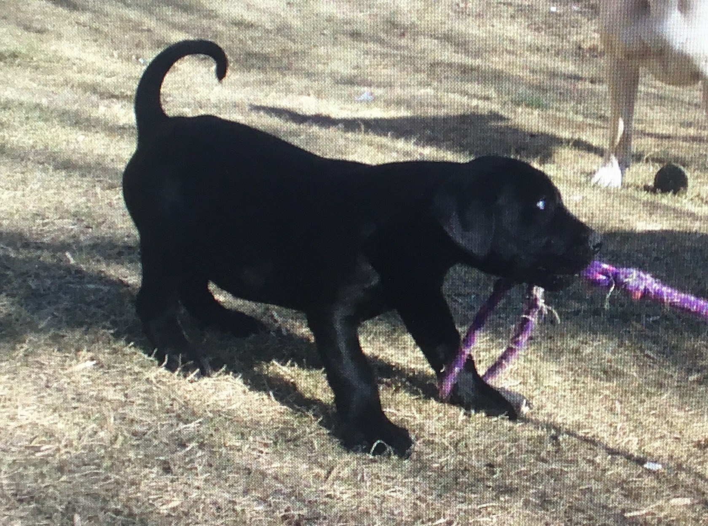
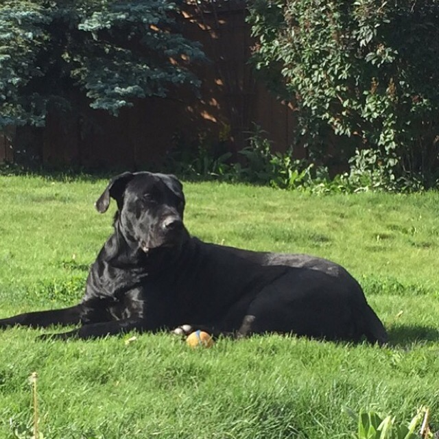
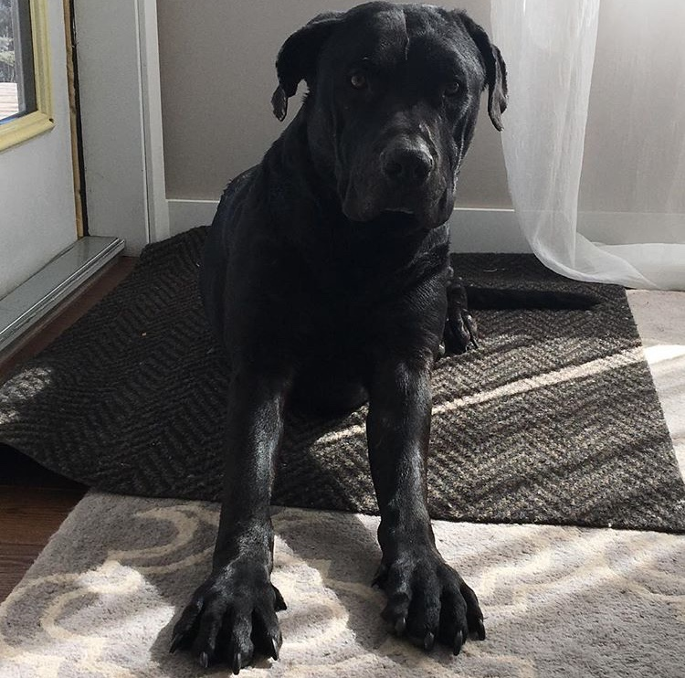

Meet Diesel
Diesel is a very playful and energetic dog. His favourite toys include chuck-it ball and kong cones. He loves swimming and going for long walks. Diesel is allergic to corn, beef liver and flaxseed. He is very affectionate and loves being around people. Diesel knows many tricks such as crawl, roll-over, play dead, speak, growl and many more.
- Born: February 10, 2010
- Breed: Pitbull/Lab Cross
- Colour: Black
- Eye colour: Brown


